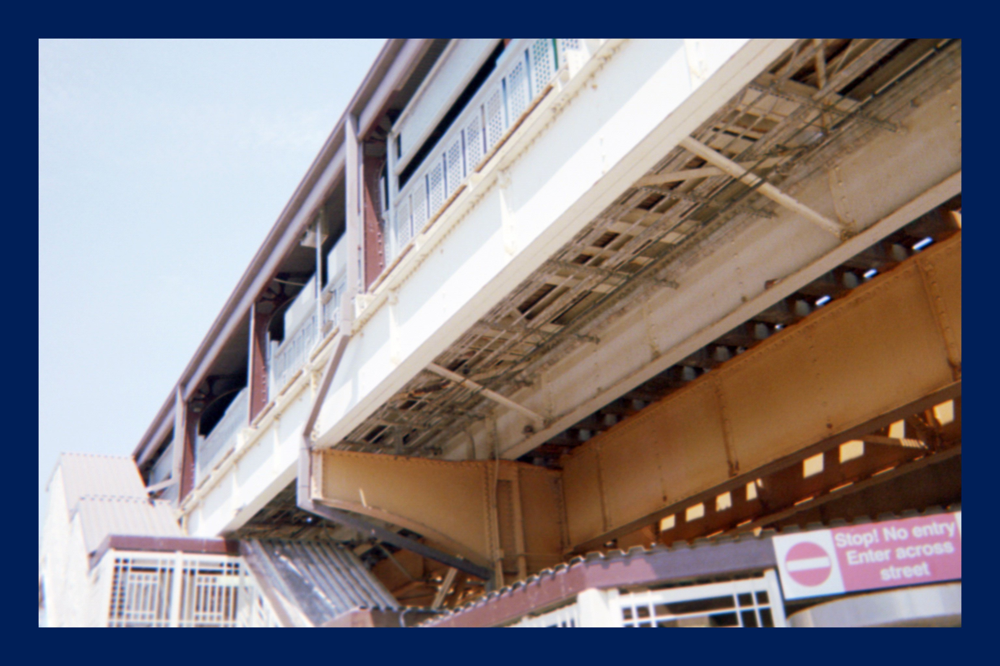

On a phone:
Tap the edges of the page
On a computer:
Click the edges of the page, or use the arrow keys, the space bar,
the trackpad, or the scroll wheel
On paper:Print it out
Basically, everything works
I.
I walked for 10 hours over 3 days, not too little, not too much. 2 hours on Friday, 4 hours on Saturday, and 4 hours on Sunday. I am not a fast walker and was especially, deliberately slow this time. I spent most of the walk craning my neck to look up at odball buildings and quirky neighborhoods; Chicago is full of them.
I started near my apartment, walking through leafy, tree lined neighborhoods and passing through the inbetween places that divide them. I didn’t have to venture far, there was so much to see within steps of my front door. Looking back, I wish I had stayed even closer; I could have spent 10 hours walking 5 square blocks around my apartment and still found more.
This specific walk was inspired by this guy, Craig Mod. Craig goes on long walks through Japan, bumbling around with a kind of accidental elegance. He stops to talk to people, ducks into coffee shops and tries pizza toast and smoked cigarettes with stodgy locals. They are walks without any real chore to them (he’s not going to buy groceries, or drop off the mail), the walk is the point and the purpose. Craig is deliberate: looking up and around him when he walks. He tries really really hard just to pay attention to what surrounds him. I like that, I like the slowness and attentiveness that a walk demands, and Craig is really really good about communicating that feeling. He’s good enough that he made me want to give it a shot: Slow down and look around, that is.
I lived in Chicago for two years, not long enough to call myself a local but long enough to call it home. My first year I lived with two roommates in this big 6 flat in Wicker Park, a younger area a couple of miles from the lake. Our apartment backed up to the aboveground Chicago transit system, the El, which would rumble past every 20 minutes, throwing off sparks and a great grinding screech that I never learned how to fully sleep through. On the other side, we looked into Wicker Park, and would spend our Saturday mornings at this little tex mex diner less than a block away. We would wake up, go put our name in line, and go back to drink coffee and sit on the couch until our names were called. My second year I lived off of Roscoe Street in Lakeview East, maybe a block away from the Lake, sandwiched between Boystown and the bougey homes that sit on tree lined avenues right up against inner Lake Shore drive. My apartment was small, but had this old dusty exposed brick that was old enough you could hammer nails directly into them. There was a big bump out window that sat just above head height looking out onto the sidewalk. My friends would jump and wave at me eating dinner when they walked past. Both places felt like healthy neighborhood sandwiched between other healthy neighborhoods.
Both places had decidedly quirky vibes: quirky houses, quirky people, great food, great people (the quirky ones can be both). They felt, in some ways, like neighborhoods that were at the tail end of a period of creative culture, the scrappy artist vibe that Brooklyn might have had 20 years ago. The difference is that despite the commercialization, the neighborhoods still had a true feeling of energy to them. They weren’t covered in new buildings and coffee shops that were all seamless curves, light wood, and hanging round globe lights above an old fashioned lettered sign with a $6.50 oatmilk latte. My buddies and I found ourselves in an art collective one night, complete with an entirely empty room covered in paint except for a single stool.
I digress.
In early June 2023 I went on a walk, not too long and not too short. I tried my hardest to stay focused on what was around me – what I was seeing. The following is the result of that walk: 10 hours, 27.83 miles, 78 voice memos. It felt good, it felt really good.
Henry Gunderson
Chicago, Illinois
II.
This project is based on the work of two people who are far better at writing, walking, and coding. First, thank you to Robin Sloan for publishing his code and to making it brutally simple to mimic his short story format. Second, I need to thank Craig Mod for publishing his walks through Japan. His ability to demand beauty out of the seemingly simple is something I admire.
2 Hours | 5.62 Miles
At 5pm on Friday I started walking.
6 steps to get outside, take a right out my door, into the hallway, then down 5 steps to get outside. I turned the corner off my street, Roscoe, onto Broadway, the long stretch of small shops that sit less than a block away from the lake front. The entirety of Chicago was ready for Friday, groups of 3 or 4 planted outside with a. beer and food, starting their summer weekends in shorts and a t-shirt, sun dresses and Cubs baseball caps. Barely 2 blocks in and I want to plop down for a beer and pizza. I walked past small to go lunch spots – Nepalese, Indian, mini donuts…a coffee shop I tend to haunt that’s been around since the 70’s with big barrels of coffee that the barista scoops into a paper bag before weighing your order by the pound. It is slightly cluttered and maybe a little bit dusty, with a goliath of an espresso machine that steams and hisses behind the counter, manned by a small army of baristas that flit behind it like bees pollinating a flower.
People are out doing things. What makes a suburb depressing is the absence of motion, what makes a farm not depressing is that there is movement all around, if you just know where to look. My neighborhood is full of motion and commotion, people walking by, popping in, and hanging out. It feels, just four blocks away, like a tiny jittery organism, stuffed full of people who are buying coffee, out to drinks, stopping by the store to pick up a 6 pack for a party tonight, or on their way to a baseball game.
Further on, sandwiched between modern six flats is quirky old wooden house with a massive turret that has been filled with plants, a little further is a renovated Church that sits off and down a side street, partially shaded and repurposed into 3 or 4 unit beautiful loft style apartment. I think that we put a little piece of ourselves in where we live – we imprint some part of who we are and pass it on. In the final episode of F.R.I.E.N.D.S. they all leave their keys on the table, a living space shapes and defines who we interact with each other and the world…I think about that, the memories that have been imprinted into the woodwork, I can feel it when an apartment has good bones. Walking down these streets reminds me of how many lives are being lived in parallel, stacked on top of each other.
Chicago is full of in-between places. I am not exactly sure why here in particular, but you can find them in spades. I just walked down a street filled with stately brownstones and an older guy slowly walking his Golden Retriever. I took a left and was suddenly next to a big ole Home Depot and Guitar Center. I am always curious about Guitar Center as a concept, how does it stay in business? It is a big cavernous retail space that is always carpeted, and sends me back to the early 2000’s whenever I step inside. The very size and scale of these two retailers feels detrimental to the feel of the neighborhood, it eliminates an entire block of what could have been mixed use buildings, with small storefronts on the first floor and apartments stacked on top. I understand the utility of having a Home Depot in my neighborhood, but almost wish it was still relegated to the suburbs.
I just walked past Parrot’s Bar and Grill, a dive with carpeted floor, cheap, lightly felted pool tables, and even cheaper Old Style ($3?). The funny thing, and the reason I noticed, is that people were hanging out at 5:45pm on a Friday…post office workers starting their weekend, small groups of 4-6 shooting a game of pool with beers before dinner. It was not at all well decorated, didn’t seem even remotely thoughtfully designed, but people were there, spending time, giving it the liveliness that a bar needs to seem even remotely fun.
Further down Clark St, a major artery on the North Side, is DePaul University, and all of the things that pop up around a University area. People skew younger, just slightly. I live in a young area, but more along the Yuppy lines than the “still in your teens” lines. The college kids are all starting their nights too, clustered in groups of 3 or four at different points around the five way intersection where the gates of DePaul are placed. If I had to hazard a guess for where their night is going, I would say maybe fewer bars and more house parties. I passed by a seedy liquor store that I would guess has helped out a broad swathe of the on campus population, 21 or otherwise.
I just crossed the street for a pink turret, it’s crazy, with a normal red brick building as the base, but bright pink bump outs sitting haphazardly on top, which are faded and worn and haven’t been painted for maybe 3 decades. It sticks out like a sore thumb, I love this worn down pink house just off the main street. It has no reason to be pink, it doesn’t fit in at all. I imagine that the owner must have been bored one Saturday and realized that he had a couple cans of pink paint left over from an interior room. One Saturday and maybe 15 years later and here I am, looking up at it as people brush past me on the sidewalk. I want to knock on the door and tell the owner “Go you! Way to keep this thing pepto-bismal pink for all these years, keep it up!”
I walked through Lincoln Park tonight, it’s also very alive but in a more refined way than my neighborhood. Neither one is gritty, but Lincoln Park feels curated. Every home is nice, super nice with those new pendant lamps hanging over the dining table and big clean windows with highly manicured front lawns. In Chicago, it’s where lawyer parents who want to raise their kids in the city would go. It’s where someone with a $$$ name brand stroller would show it off by jogging with their baby and a golden retriever named Harley or Scout trotting alongside. Lincoln Park feels like a place that wants you to know its residents are wealthy but not ostentatious.
End of Day 1 – It feels like the sun is hitting everything perfectly, a golden light that filters down to bathe the sidewalks in a golden glow. Damn, everybody looks happy.
4 Hours | 11.30 Miles
Up and at ‘em. I wasn’t sore today, not really.
I wasn’t sore today, not really. I was a bit slow off the bat but got out of my house around 9am. I walk outside, take a left and walk the half a block down Roscoe before taking another left onto Broadway Street. I walk past La Biznaga 2 a no frills taco spot that lets you bring your own beer and gives you an ice bucket to put it in free of charge. I almost never walk north since my friends live towards Lincoln Park, work is downtown, or I was making the trip from Wicker Park to Lakeview. There’s a massive iHop right across from another breakfast spot maybe 5 blocks away, I can’t believe I didn’t know about it earlier. Shame! Another block or two onward and I am passing small neighborhood pubs, places that don’t show up on a single “Top 10” list, and look well-worn but not worn down. Cared for. Whenever I find the short, stubby, inbetween streets, the ones that hook a bit and directions apps never really route through, I feel this urge to follow them down. They don’t really connect to anything and often dog leg left or right. They are out of the way, out of sight and out of mind and oh so easy to walk past. I like those streets, and today, whenever I saw what I thought might be one I would stop and turn, trying to peer down. There are inadvertent little gems, since nobody passes through them to get to another major street. They almost accidentally sit out of mind.
I am now past North Halstead and well into Uptown. I just passed a 6 flat that would be completely and utterly normal if not for the fact that someone spent time tiling the entire front entrance with small, 2x2 inch porcelain tiles. I imagine that an old guy who lived here for years slowly formed the idea of tiling the entire front entryway picturing and rolling it around in his mind before successfully lobbying the landlord. He probably spent days tiling, mixing his own caulk, and sitting down heavily into a ratty old lawn chair at the end of the day, drinking cheap lite beer grabbed out of a dirty coleman cooler within arms reach. There are so many houses here that are weird in that same way. Completely out of touch with their environment, barely aesthetically pleasing. I can’t get enough of it. It makes me feel like I’m constantly walking around a city that has been layered with easter eggs for me to discover.
I push further into Uptown. A guy yells at me when I walk past him, just a yell. Pushing sound out of his mouth. I speed up a bit, it’s 10 in the morning, I’m not quite sure what’s up.
Uptown is a blend of cultures. There are signs in Korean, I stop in a just opened taco shop at 11am and get a birria taco with goat meat. Just one, I ate earlier, but the sign was calling to me and the taco was warm and fresh made. It was just me and an old Spanish guy who was talking to people behind the counter in rapid fire Spanish as they prepped for lunch rush. They brought me napkins and seemed surprised that I just wanted only one taco. Just one? They asked…really? Really I said, just one, I just want to try it.
Outside of the Uptown Post Office it two massive granite (granite?) eagles. They are sculpted in a fierce art deco style, sweeping straight lines, maybe 5 ft tall. I had to stop and look at them, these two massive birds, seemingly chiseled in rough outline of an eagle. For some reason it felt like the extension of an empire. Here, where we send our mail, are two massive, imposing creatures that flank something as simple as a post office. On we go. The rest of Uptown is interesting, the road itself is big and busy, something that does not lend itself to good community building. However, at 11am I was passing people left and right. It seems that despite everything working against it, Uptown is alive and well. On the corner, just before I turned off the main drag onto the side streets I came across what looked like a former German style house – something that would have had long oak tables inside and sold two types of beer: dark or light. The outside was all shingles and with white contrasting beams with dark windows. It’s now a Vietnamese Church. I mean, it doesn’t even make sense but somehow it does. It’s a new generation of immigrants repurposing what the previous generation brought with them. Plus, the old Schlitz insignia built into the top of the building adds even more character.
I popped through Summerfest up in Avondale, it was very Swedish, very very Swedish. People were outside milling about, walking through the fest, stopping at local stalls. Chicago in the summer is a frenzy, everyone outside as much as possible trying to soak in the sun and develop at least a little color. Everyone packs as much as possible into the short couple of months when the weather is tolerable. I bought a cookie from a hip bakery that was tastefully decorated, all clean lines and light wood finishing. The cookie had smelt (an oatmeal-like grain) and was thick and nutty and chewy. It was hefty and filling and the perfect midday snack. I stopped in a small bodega (a shoppy-shop) and started chatting with the owner. The shop was 10X15 ft, maximum, stocked with brands that she knew and loved. She moved here from New York a couple of years ago and seemed so proud of what she had built (she should be), she brings in new and up and coming brands and shares them with her community, and in turn the community supports her.
I walked out of Summerfest and started to meander home, a couple of miles. It still felt early in the day and already I wanted a cold beer. I stopped and sat on a bench and watched people eat lunch on their balconies, sunlight glancing off pale arms that hadn’t seen sun for an entire winter. So many dogs! Golden retrievers seem to be the norm. I looked at old Victorian houses, built 3 or 4 four stories tall, tightly packed into small narrow lots, squeezing every ounce of space but leaving room for beautiful decorative siding. I looked at people slowly amble past drinking iced coffee, little droplets of water condensed on the outside of their plastic cups, sweating just like their owners.
I walked home grateful.
4 Hours | 11.12 Miles
Final Day!
I was sore waking up and slow out the door. It was a gloomy Chicago Sunday, rain pitter pattering down, with people scurrying past my first-floor windows hunched under umbrellas. It was warm rain, but rain all the same, and I didn’t want four hours of “squish, squish” with every step. I would have preferred to drink coffee and read inside, warm and dry.
It's Chicago in the summer so people are still outside despite the wetness. I don’t own an umbrella, so the hood of my rain jacket saw a lot of use, and all I could do was try and peer out from under the long hood without getting droplets of water in my eyes. I walked past a house that was covered in weeds, it looked worn down with peeling paint and a slightly sagging front stoop. The rain added to the gloominess of it. There was a bony arm peeking through the dusty window, attached to someone I couldn’t quite see.
More walking, putzing, trying to avoid the rain. More stopping in coffee shops for a latte and sitting down by the window, shaking water droplets everywhere, and watching people coming and going. It’s gotten annoyingly cold, windy and overcast, but damn, just walking around reminds me how much I love this city. Some older houses have a family coat of arms above a sill, worn down if its wood, or slightly less emphasized if stone. A lot of care has gone into these buildings over the years. I walk past a front porch with a lone chair positioned just so to look out onto the street, with a left hand side table at the perfect height for a coffee in the morning or a cold beer while the sun sets. I love neighborhoods where people are trying. Someone painted their handrail to match the door color, and trust me, it was not professionally done.
I’m at a big intersection out front a public school with a separate boys and girls entrance carved in marble above the doors. A relic from a different time. It’s a quiet neighborhood, well cared for, and mostly with younger families.
I’m now pushing down Damen Avenue, towards my old house. I always used to bike this at night to go hang out with Emily. It’s different walking it, I’ve never walked it before. But I used to pass this massive park with a public pool in the back and a whole set of baseball/softball fields in the front. There are o many families and kids out here, all of them dressed in matching uniforms. Nobody seems to be coordinated at playing, one kid is playing with his glove, another is picking his nose in the outfield. It’s exactly what kids sports are supposed to be, uncoordinated. The row houses surrounding the park are marked by signs of different elementary schools, and the sidewalks have been marked by chalk drawings and hopscotch, slowly getting eaten away by the rain. There are plastic toys strewn all over yards. One of those little red and yellow carts is tipped over on its side, a casualty next to a new toy. This neighborhood is well lived in, simple and sweet.
The busy streets suck all the life out of everything, they just become these liminal inbetween places, where people, inside their vehicles, are constantly being shuttled through, rather than stopping. It destroys all of the avenue when cars are whizzing by at 40 or 45, I can’t hear anything other than that constant low murmur of cars wooshing past.
I keep on walking, and start thinking.
It’s weird, I think part of what I am attracted to as I walk around is this sense of place, of rootedness that I see all around me. People taking the time to grow flower boxes, to figure out exactly where their should go for the optimal drink and snack access while still getting a great view of the street. It’s about the handpainted lettering above a house, a sign that someone has chosen it themselves with plans to be their quite a while. The irony, is that everything I am doing right now is the opposite. I am deeply mobile right now, moving from one nice part of the city to another, then after another year moving from one nice part of one city to one nice part of a whole different one. My Saturdays are spent the same way pretty much everywhere, walking through the local farmers market, buying a too expensive coffee, and then hanging out in a park before going to loud young person bars. I could get dropped into pretty much any city in the US and do the same things. I’m not saying that I am full of bullshit, venerating one lifestyle that I clearly don’t lead. No, I think I am attracted to it because I am less enthralled with the current method, the lack of rootedness that I feel.
There is an episode in Parks and Rec about this guy that the main character, Leslie Knope starts dating (Season 2, Episode 13) who is named Justin. Justin has amazing stories about all of the adventures he has been on, but at the end of a later episode (Season 2, Episode 16) she realizes that ultimately he is just a story collector. He never stays in any place long enough to be truly rooted, and to take the risk of what it means to dig in and commit. I think so much of what I spend time on is thinking about what is next. This starts in high school, when we think about college in sophomore year, then in college it’s always about your next internship, next semester, and next job. Working in a company, the focus seems to constantly be centered on one upping yourself…how do you make yourself and your company more money. What’s next, what’s next what’s next. It feels like movement for movement’s sake. I walked past a bar today from 1950 that has been hosting people for 73 years.
Everything has a lifecycle, it is important that I focus on improving, on continuing to try. But, walking made me think about what forward motion is supposed to mean. How do I define a step forward? How do I define progress. There is value is becoming rooted, rooted to a place and becoming part of a place. I worry that I am too flighty, willing to jump or move to the next thing when I get bored. I have the ability in today’s world to do that.
Walking home, I think about what it would mean for my local bar to become Monsignor Murphy’s for years, to use the same squeaky shopping cart at the same Jewel Osco, to eat the same cinnamon rolls from Ann Sather every time I have a guest in town. I think about what it would mean to watch seasons change here and to do it multiple times. To know what August day signals the end of summer and ushers in the arrival of fall. I wonder what it would be like to stay somewhere long enough to really get to know my neighbors, beyond just baking them treats every once in a while. I think about what it would mean to watch friends cycle in and out of the city as they have their own trajectory. I think about what it would feel like to be that friend that remains, rather than the one that moves on. I wonder if I could actually do it, or if the immense pressure I feel to always be moving forward would ultimately trump any sense of place that I could find. I don’t know.
“Voice Memo from Jun 11, 2023 – I think the end name is going to be Walking in Place. Talking to Emily and Will after, the things that I harped on, wasn’t so much the quirky architecture, but what makes a place a home, and how you know it when you see it. I think particularly as it relates to moving forward, this idea of constant forward motion as a state of being, sometimes ignores the idea that motion doesn’t need to be forward to be positive. The reason this is named walking in place is because if I took anything away from seeing all of this, walking past all of these lives, I am reminded of the idea of Walking in Place. Exerting energy, exerting force, exerting time upon a single location, without the desire to leave or run away. It’s often harder to remain in one place, but it’s how community develops. It’s hard and I’m not sure I would know how to do it right. But, I think I will continue, no matter where I go, to walk. Hopefully in doing so, reminding myself, to dive deeper, put down roots, and try. There is so much here.”
Editions of this e-book for platforms that support custom typefaces use Vollkorn, the “free and healthy typeface for bread and butter use” designed by Friedrich Althausen. It is the same typefaced used by Robin Sloan, whose base code I am using.
I took all of the pictures in this book myself, using inexpensive, disposable, point and shoot cameras. I was intrigued by the idea of using something with limited options and customization, forcing me to pick and choose what was worth photographing. I doubt any true photographer would say it is good, but I have to admit that I quite like how they came out.
Again, thank you to Robin Sloan for building the framework, html, and CSS and making it available and easy to access. Without his publicly accessible work I would never have been able to build this.
